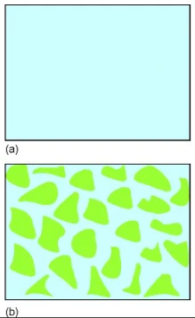
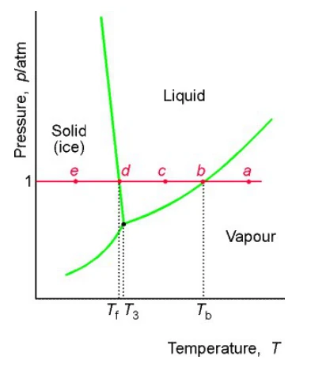
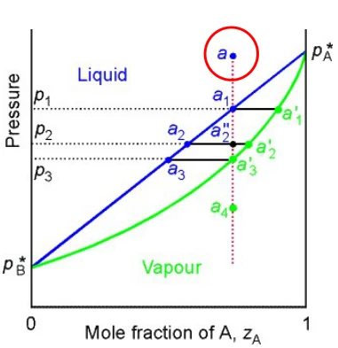
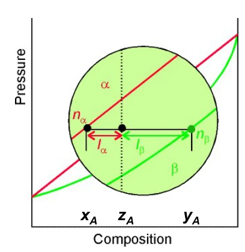
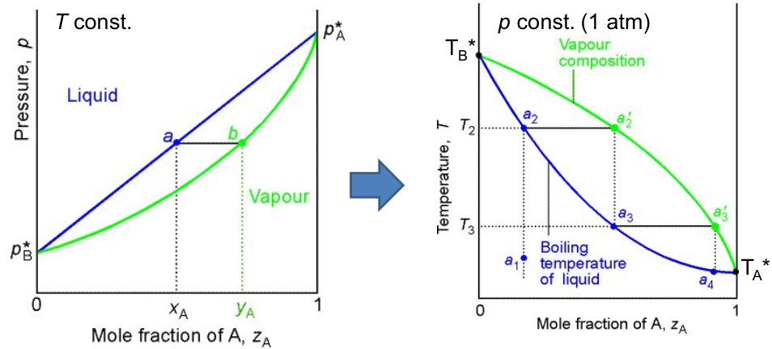
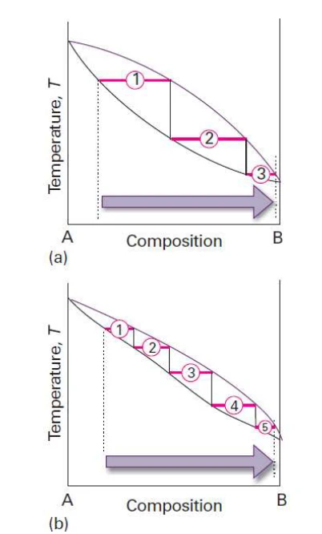
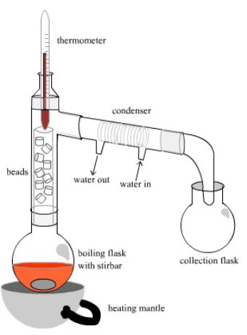

LESSON 14 · CHAPTER 8 · PHASE DIAGRAMS I
相律、二元气液相图与分馏
相与组分判定 · 相律完整推导 · 泡点与露点 · 杠杆规则 · 理论板
14.1 · PHASE & HOMOGENEITY
相：均匀性与相数的判定
相图（phase diagram）把平衡状态表示为温度、压力及组成的区域和边界，用于判断体系存在几相、各相由什么构成，以及改变条件时怎样发生相变。本课由单组分的温压图过渡到二元气液相图，贯穿的判据仍是各组分在共存相中的化学势相等。
相（phase）指化学组成与物理状态均匀的物质部分，相数记 P。气体混合物通常是一相，两种完全互溶液体形成的均匀溶液也只有一相；冰与水共存为两相，即使它们化学式相同。两种互不相溶液体则是两个液相，说明物态相同不等于属于同一相。
判断要看结构与组成是否属于同一个均匀域。固溶体中 A 原子均匀进入 B 晶格，可形成单相；若 A 富集区分散在 B 基体内，即使宏观看起来均匀，仍可为多相。多个相同组成和结构的液滴也不按滴数分别计相；相数与颗粒数、容器数是不同概念。

来源：PChem1_lec14 Phase Diagram1 20261029.pdf，PDF第1–2页。
14.2 · CONSTITUENTS & COMPONENTS
物种与组分：最少独立信息
物种或组成物（constituent）是体系实际存在的化学种，例如离子或分子。组分（component）则是足以表达各相组成的最少独立化学成分，数目记 C。水和乙醇在不考虑反应时是两个物种、两个组分；有反应联系时，列出的化学式数目可能超过独立组分数。
S 为所考虑物种数，R 为独立反应关系数，R′ 为额外独立组成限制数。必须数独立关系：一个反应式的倍数或由其他反应线性组合得到的式子不会再次减少 C。摩尔分数总和为一已在组成变量计数中处理，不能又作为额外约束重复扣除；已给出的总投料量也不一概等于新的组成约束。
例如 CaCO3(s)⇌CaO(s)＋CO2(g)，三种物种有一个独立反应，C=2；任取合适的两个组分就可借反应关系表达第三种。若三相均存在，固体碳酸钙、固体氧化钙和气相分别计相，P=3。组分不必等同于每一相都含有的一套可实际分离物质。
以水的自解离作补充：若只计 H2O、H3O+、OH−，存在一个独立反应平衡，电中性又限制两种离子的相对浓度，因此纯水仍可用一个组分表达。这里电中性是独立限制；若已选择电中性的独立成分来计 C，就不可再扣一次。这说明写下所有离子名称只是计数起点。
来源：PChem1_lec14 Phase Diagram1 20261029.pdf，PDF第2–3页。
14.3 · REACTION CONSTRAINTS
反应是否平衡与附加约束
NH4Cl(s)⇌NH3(g)＋HCl(g) 有三个物种、一个独立平衡反应。若体系只由纯 NH4Cl 分解而来，且气体无选择性损失，两种气体始终等物质的量，多一个独立组成限制，于是 C=3−1−1=1；固体与混合气体共存时 P=2。
若另外加入 NH3 或 HCl，等量限制失效，通常恢复 C=2。固体存在时，在给定温度下平衡约束固定的是两种气体分压的乘积；只有等量情形才由此进一步确定各自分压。做题要先读清体系如何制备，以及是否允许额外加入组分。
课件还以常温下水、氢气、氧气说明反应受阻的情形：若实验时间内水生成反应冻结，就不把该反应的平衡关系用于扣除独立组成，此受约束模型可取 C=3。它描述反应被动力学抑制时的相平衡条件，不表示任意 H2/O2/H2O 混合物已达到完全化学平衡。
来源：PChem1_lec14 Phase Diagram1 20261029.pdf，PDF第3页。
14.4 · DEGREES OF FREEDOM
自由度究竟数什么
自由度或变度 F（degrees of freedom, variance）是在维持给定平衡相集合时，可独立指定的强度变量数，通常涉及 T、p 和各相组成。纯液体与蒸气共存时，温度一旦给定，饱和压力随之确定，因此只有一个独立温压变量。这里的“改变”指沿允许的平衡状态变化，不是说仪器无法强行改变另一个量。
F 不计样品总量和各相相对数量。相同温压下，可以有少量液体配大量蒸气，也可反过来；这不会额外增加各相平衡性质的自由度。确定相的数量需要质量守恒与杠杆规则。
外界固定一个原本独立的强度变量，剩余自由度减少一。二元体系固定温度或固定压力时，记 F′=C−P＋1；若再独立固定另一温压变量，剩余为 C−P。不能先在定义 C 时扣过一个组成约束，又在最终 F 中把同一约束重复扣除。
例如二元单相体系原有 F=3，可用 T、p 和一个组成描述；只固定 T 后仍有压力及组成两个变量。二元气液两相原有 F=2，固定 T 后只能再选一个平衡变量；同时固定 p 后，两端相组成均确定。整个两相样品仍可因液气配比不同而具有不同总体组成，不能把这一事实误判成相律失效。
来源：PChem1_lec14 Phase Diagram1 20261029.pdf，PDF第3、5–7页。
14.5 · DERIVATION OF THE PHASE RULE
Gibbs 相律的完整计数推导
相律适用于宏观平衡体系，通常忽略重力高度差、显著界面曲率及额外场对平衡的影响。先在课件采用的各组分可在各相分配的模型中数变量：每一相的 C 个摩尔分数满足总和为一，故只需指定 C−1 个；P 相共有 P(C−1) 个组成变量，再加全体系共同的 T 和 p。
达到相平衡后，对每个独立组分 i，都有 μiα=μiβ=… 。P 个相互相等只需 P−1 条独立方程，例如都与第一相比较；不应把每一对相的等式全部当作独立条件。C 个组分共提供 C(P−1) 条约束。
若存在化学反应，可先从物种数与独立反应求出 C，再使用相律。式中的“＋2”对应共同温度和压力；相律给出可以选择多少变量，但不会直接给出相界线的位置。要计算具体相界，还需要化学势、活度或状态方程。Gibbs 的非均相平衡理论把这些不同体系纳入同一计数框架。
来源：PChem1_lec14 Phase Diagram1 20261029.pdf，PDF第4–5页。
14.6 · ONE-COMPONENT SYSTEMS
单组分相图与相变检测
单组分时 F=3−P：单相区 F=2，在温压图上表现为区域；两相共存 F=1，表现为曲线；三相共存 F=0，只能在特定三相点发生。在通常相律假设下，单组分四相平衡会给出负自由度，因此不能一般地建立这种平衡。
纯水在固定压力下冷却，依次经过蒸气、气液共存、液体、固液共存和固体区域。气液共存原有 F=1，固定压力已用去它，所以平衡凝结温度不能再任意改变；凝固亦然。单相区原有 F=2，固定压力后仍能改变温度。应分清体系本身的 F 与实验路径上剩余自由度。

热分析通过冷却曲线观察一阶相变的潜热效应，理想条件下相变阶段出现平台；实际过冷、传热速率和非平衡会使平台偏离。DSC 则测样品与参照间的热流差。金刚石压砧可研究高压相变，红宝石荧光位移主要用作压力标定，样品的相变还需结合光谱或衍射等证据。
来源：PChem1_lec14 Phase Diagram1 20261029.pdf，PDF第5–6页。
14.7 · BINARY SYSTEM & NOTATION
二元体系的记号与图的截面
二元非反应体系 C=2，故 F=4−P。固定温度时，单相有两个剩余自由度，可取压力和组成；气液两相只有一个，可在压力与某一相组成之间选一个。固定压力的温度—组成图也服从相同的剩余自由度计数。
本课统一以 xA 表示液相中 A 的摩尔分数，yA 表示气相中 A 的摩尔分数，zA 表示全体系 A 的总摩尔分数。各自的 B 分数均为一减去 A 分数。单相液体时 z=x，单相气体时 z=y；两相区中通常 x≠z≠y。
以下假定两种液体完全互溶、液相理想、气相近似理想，并处于研究温度下的气液平衡；pA*、pB* 是同温纯液体蒸气压。约定 pA*＞pB*，即在所讨论条件下 A 更易挥发。星号不是组分分压，分压要另乘液相分数。
来源：PChem1_lec14 Phase Diagram1 20261029.pdf，PDF第7–8页。
14.8 · BUBBLE-PRESSURE CURVE
由 Raoult 定律得到泡点线
p=pA＋pB=pB*＋(pA*−pB*)xA
因此恒温下总蒸气压对液相组成是一条直线，从纯 B 蒸气压连接到纯 A 蒸气压。液体在该压力出现第一小泡平衡蒸气，故称泡点线（bubble-point curve）。它给的是总压随液相组成的关系，不能把横坐标直接当作气相组成。
在理想模型中，增加更易挥发的 A 会提高泡点压力；总压必在两纯组分蒸气压之间。给定某个两相共存压力，也可反解液相组成。理想性失效时应引入活度系数，气相非理想时还需逸度，直线便不再是普遍结论。
来源：PChem1_lec14 Phase Diagram1 20261029.pdf，PDF第7–8页。
14.9 · VAPOUR COMPOSITION & DEW CURVE
气相富集与露点线的推导
气相组成由 Dalton 分压关系得到，不能直接令 y=x。令相对挥发度 α 为两纯组分蒸气压之比，有：
α＞1 时，对混合组成 0＜x＜1 有 y＞x，所以蒸气富集 A；两个纯组分端点仍有 y=x。α 越接近一，两相组成越接近，蒸馏分离就越困难。
由 xA=yAppA* 及 B 的对应关系，再用 xA＋xB=1 消去液相组成：
这条弯曲线以气相组成为横坐标，称露点线（dew-point curve）：气体等温压缩到此，开始出现第一滴液体。泡点与露点是同一气液平衡的两种组成表示，不能将两条曲线上的同横坐标点当成一对共存相。
由上式可直接检查富集方向：在混合物内部，分母为正，分子的符号由相对挥发度与一的大小关系决定。若交换 A、B 的命名，富集方向也需相应交换；“蒸气永远更富 A”只有在先约定 A 为较易挥发组分时才成立。
来源：PChem1_lec14 Phase Diagram1 20261029.pdf，PDF第7–8页。
14.10 · TIE LINES & ISOPLETHS
读恒温图：系线与封闭减压路径
把泡点线和露点线画在同一 p—组成图上，横轴用总体组成 z 表示体系状态点。泡点线以上为单液相，露点线以下为单气相，中间是气液两相区。曲线本身是相出现或消失的边界：露点线上对应饱和蒸气和趋于零的液相，不能把它与线下未饱和单气相完全混同。

封闭体系只拉动活塞减压、不抽走物料时，z 不变，路径为竖直等组成线（isopleth）。从高压液体到泡点，第一泡蒸气的 y 由同压水平线与露点线交点给出；继续减压，A 优先进入气相，剩余液体变得较贫 A，两相组成沿各自边界变化。
在两相区作水平系线（tie line），左端泡点交点读 x，右端露点交点读 y，内部体系点读 z。固定温度与压力后，x、y 已由平衡决定，但 z 仍可随两相配比变化，所以相律不能取代杠杆规则。到达露点时，几乎全部成为组成等于 z 的蒸气，残余液体量趋于零；再降压则只剩气体。若边减压边抽气，体系开放，z 就未必保持不变。
来源：PChem1_lec14 Phase Diagram1 20261029.pdf，PDF第8–11页。
14.11 · THE LEVER RULE
杠杆规则：从守恒求两相数量
设液相与气相的物质的量分别为 nl、ng，总量 n=nl＋ng。总 A 的量一方面是 nz，另一方面为 nlx＋ngy。两种写法相等后整理：
nl(z−x)=ng(y−z)
nlng=y−zz−x； ngn=z−xy−x； nln=y−zy−x
相量与对侧的线段长度成正比，故体系点越靠近液相端，液相越多。图上杠杆的“支点”是总体组成，两个端点是共存相组成。注意课件用 α、β 表示两相，不能与上一节表示相对挥发度的 α 混用。

横轴采用摩尔分数，得到的就是物质的量分配；质量分数图可配套求质量分配，不能直接混算。气体摩尔体积远大于液体，所以气相占据大体积不等于其物质的量一定占优。
杠杆规则的两个端点必须来自同一温压下的同一条系线。若混用了另一温度的蒸气组成，即使代数算出正数也没有平衡意义。当两端组成重合时，组成守恒本身不足以区分相量，应回到实际平衡条件；不能把分母为零的式子继续当作普通杠杆计算。
来源：PChem1_lec14 Phase Diagram1 20261029.pdf，PDF第10–11页。
14.12 · WORKED EXAMPLE
泡点、露点和杠杆规则联立计算
为练习读图，设某温度下 pA*=100 kPa，pB*=40 kPa，总体组成 zA=0.500。泡点压力为 70.0 kPa，露点压力为 57.14 kPa，因此在 64.0 kPa 时处于两相区。这里数值是按课件模型自设的例题，不对应某一指定真实液体。
ngn=0.500−0.4000.625−0.400=49； nln=59
先用压力求两端组成，再用 z 求数量。若总量为 9.00 mol，则液体 5.00 mol、蒸气 4.00 mol；A 在两相的量分别为 2.00 和 2.50 mol，相加为 4.50 mol，正好是总量的一半。最终至少检查 x≤z≤y、两相分数之和为一，以及组分守恒。
来源：PChem1_lec14 Phase Diagram1 20261029.pdf，PDF第7–11页；数值为原理例题。
14.13 · TEMPERATURE–COMPOSITION DIAGRAM
从恒温压力图到恒压温度图
恒压 T—组成图显示不同温度下的气液平衡。液体稳定在低温侧、蒸气稳定在高温侧，下方为泡点线，上方为露点线，中间为两相区。这与恒温压力图“高压液体、低压气体”的上下关系不同，不能只记一条曲线的颜色或形状。
对给定液相组成 x，求满足 pext=x pA*(T)＋(1−x)pB*(T) 的温度，即得泡点；再以该温度的分压计算 y，得到对应露点曲线上的点。纯组分蒸气压随温度变化，可在汽化焓近似恒定、蒸气近理想等条件下用积分 Clausius–Clapeyron 式估算：
这不是把一张图的压力轴直接替换成温度轴，而是重新满足固定外压下的相平衡。对本课无共沸的理想体系，A 更易挥发，对应较低纯组分沸点；加热单液相到泡点，最初蒸气仍比原液富 A。

若已知的反而是气相组成 y，就在固定外压下求满足露点关系的温度，再计算最初凝结液体的 x。泡点题给液体组成，露点题给气体组成，是选择方程的直接依据。同一总体组成在两条边界对应的温度一般不同，故二元混合物可在一段温度范围内逐步汽化，而非像纯物质那样在固定压力下只有一个沸腾温度。
来源：PChem1_lec14 Phase Diagram1 20261029.pdf，PDF第11–12页。
14.14 · FRACTIONAL DISTILLATION
分馏、理论板与分离难度
把液体加热到泡点，收集与其平衡的蒸气，再完全冷凝，所得新液体组成等于原蒸气组成。重新汽化后，新蒸气进一步富集易挥发组分。在 T—组成图上，水平一步表示同温气液平衡，向泡点曲线的连接表示冷凝后以新组成开始下一次汽化。
理论板（theoretical plate）表示一次理想气液平衡接触级，用于衡量分离能力；它不等于一颗填料，也不保证对应一块实际塔板。两条平衡曲线越接近，每一级造成的组成变化越小，达到同样分离程度就需更多级。纯组分蒸气压接近或相对挥发度接近一时，分离通常更困难。

分馏柱的填料提供气液接触面积，上升蒸气与回流液反复交换物质，塔顶通常富集较易挥发物，塔底富集较难挥发物。实际效果还受回流比、流动和传质速率影响，增加柱长或填料并不自动保证达到理想板数，也会带来压降、滞留和能耗方面的代价。

本课的逐级富集建立在两相组成持续不同的模型上。真实体系若遇到共沸，普通恒压分馏便受相应限制，不能由理想图推断任意二元混合物都能分成纯组分。解题按“定截面、认相区、读两端组成、求相量、检查过程是否开放”的顺序，能避免大多数图形误读。
实际批次蒸馏不断移走富易挥发组分的馏出物，烧瓶中残液的总体组成会改变，随后馏分也随之变化；这与前面的封闭活塞减压路径不同。图上的逐级富集说明理想分离方向，若要预测某一时刻的釜液或累计馏出组成，还需要对应开放操作的物料衡算，不能沿一条固定 z 的竖线读完整个蒸馏过程。
来源：PChem1_lec14 Phase Diagram1 20261029.pdf，PDF第12–13页。